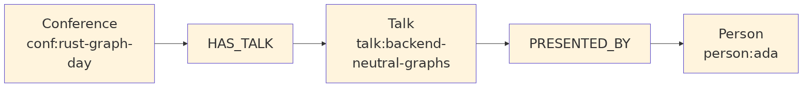

Here is a complete graph-building example:
use grust::prelude::*;
fn conference_graph() -> Graph {
let mut g = Graph::builder();
let rust = g
.node("Conference", "conf:rust-graph-day")
.prop("name", "Rust Graph Day")
.prop("city", "San Francisco")
.finish();
let talk = g
.node("Talk", "talk:backend-neutral-graphs")
.prop("title", "Backend-Neutral Graphs in Rust")
.prop("track", "systems")
.finish();
let ada = g
.node("Person", "person:ada")
.prop("name", "Ada Example")
.prop("role", "speaker")
.finish();
g.edge("HAS_TALK", &rust, &talk).finish();
g.edge("PRESENTED_BY", &talk, &ada)
.prop("confirmed", true)
.finish();
g.build()
}The resulting graph can be loaded into memory, exported to CocoIndex target state, or sent to a configured backend:
# use grust::prelude::*;
# async fn load<S: GraphStore>(store: &S, graph: Graph) -> grust::Result<()> {
let report = store.put_graph(&graph).await?;
assert_eq!(report.nodes, 3);
assert_eq!(report.edges, 2);
# Ok(())
# }The same graph can be loaded through the typed backend path by
declaring the schema and using put_typed_graph:
# use grust::prelude::*;
# async fn typed_load<S: GraphStore>(store: &S, graph: Graph) -> grust::Result<()> {
let schema = GraphSchema::builder()
.node(
"Conference",
vec![
Field::required("name", FieldType::String),
Field::required("city", FieldType::String),
],
)
.node(
"Talk",
vec![
Field::required("title", FieldType::String),
Field::required("track", FieldType::String),
],
)
.node(
"Person",
vec![
Field::required("name", FieldType::String),
Field::required("role", FieldType::String),
],
)
.edge(
"HAS_TALK",
vec![Label::new("Conference")],
vec![Label::new("Talk")],
Vec::<Field>::new(),
)
.edge(
"PRESENTED_BY",
vec![Label::new("Talk")],
vec![Label::new("Person")],
vec![Field::required("confirmed", FieldType::Bool)],
)
.build();
let report = store.put_typed_graph(&schema, &graph).await?;
assert_eq!(report.nodes, 3);
assert_eq!(report.edges, 2);
# Ok(())
# }That call checks node labels, edge labels, required fields, field types, and edge endpoint labels before writing. Backends then use the same schema in their own way: memory validates, LanceDB mirrors into typed Arrow tables, Sail mirrors into typed Delta tables, pgGraph exposes typed SQL views and indexes, SurrealDB defines schemafull tables and fields, and FalkorDB creates useful indexes.
Traversing from a conference to speakers becomes a backend-neutral expression:
let speakers = store
.traverse(
Traversal::from_node("conf:rust-graph-day")
.out("HAS_TALK")
.to("Talk")
.out("PRESENTED_BY")
.to("Person"),
)
.await?;